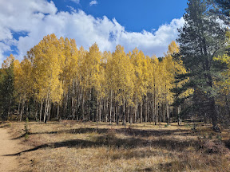
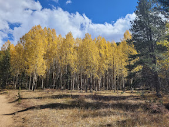

Looking up at Aspens
Photo by author

More Aspens
Photo by author
Aspens Along Abyss Lake Hike
Photo by author
List of the most important factors for a fall hike
Hikes MUST have the following:
| Hike Name | Trail Length | Elevation Gain | Trail Rating | Notes |
|---|---|---|---|---|
| 9 miles | 3,057 feet | 4.8 stars | No parking at trailhead. Mandatory shuttle. | |
| 10 miles | 2,887 feet | 4.8 stars | Requires timed entry | |
| 10 miles | 1,942 feet | 4.7 stars | Parking very limited. Shuttle encouraged. | |
| 12 miles | 2,404 feet | 4.7 stars | Recommended by friends. |
This is definitely a worthwile hike to do in the autumn, even with crowds and traffic. The hike starts of pretty easy, with a jawdropping view of the aspens 2.5 miles in. Miles 4 and 5 are steeper with switchbacks. There is a great view of Bierstadt and other peaks. It is close to Denver and easily accessible.
Looking up at Aspens
Photo by author
More Aspens
Photo by author
Aspens Along Abyss Lake Hike
Photo by author